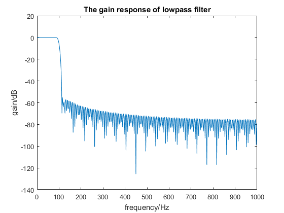
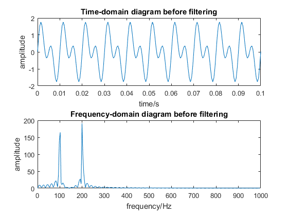
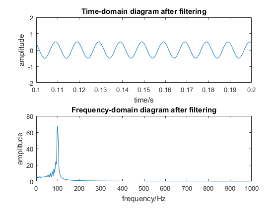

f1=100;f2=200;
fs=2000;
m=(0.3*f1)/(fs/2);
M=round(8/m);
N=M-1;
b=fir1(N,0.5*f2/(fs/2));
figure(1)
[h,f]=freqz(b,1,512);
plot(f*fs/(2*pi),20*log10(abs(h)))
xlabel('frequency/Hz');ylabel('gain/dB');title('The gain response of lowpass filter');
figure(2)
subplot(211)
t=0:1/fs:0.2;
s=sin(2*pi*f1*t)+sin(2*pi*f2*t);
plot(t,s);
xlabel('time/s');ylabel('amplitude');title('Time-domain diagram before filtering');
axis([0 0.1 -2 2]);
subplot(212)
Fs=fft(s,512);
AFs=abs(Fs);
f=(0:255)*fs/512;
plot(f,AFs(1:256));
xlabel('frequency/Hz');ylabel('amplitude');title('Frequency-domain diagram before filtering');
figure(3)
sf=filter(b,1,s);
subplot(211)
plot(t,sf)
xlabel('time/s');ylabel('amplitude');title('Time-domain diagram after filtering');
axis([0.1 0.2 -2 2]);
subplot(212)
Fsf=fft(sf,512);
AFsf=abs(Fsf);
f=(0:255)*fs/512;
plot(f,AFsf(1:256))
xlabel('frequency/Hz');ylabel('amplitude');title('Frequency-domain diagram after filtering');
  